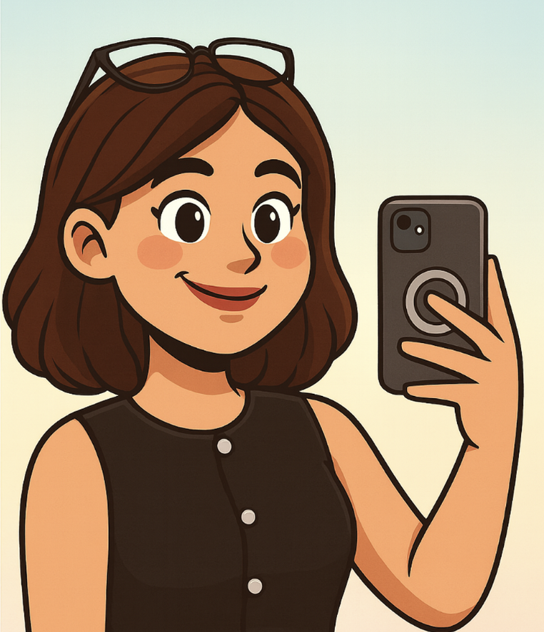
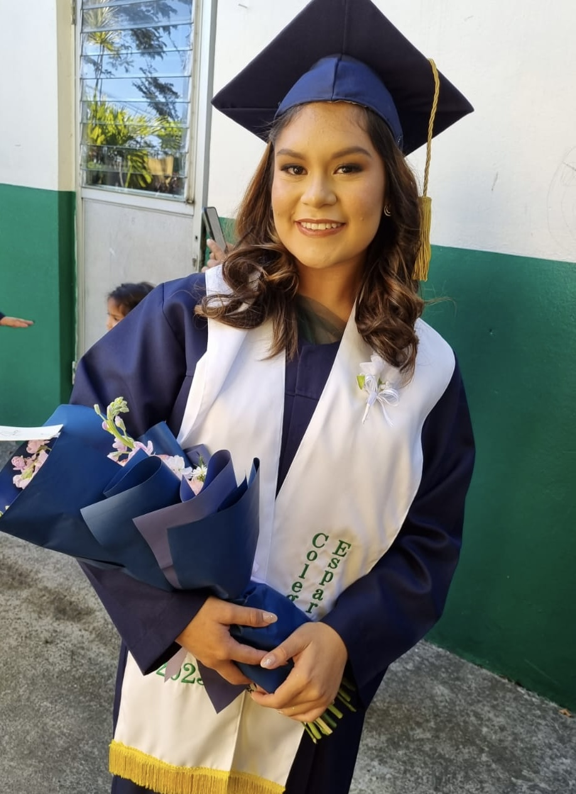
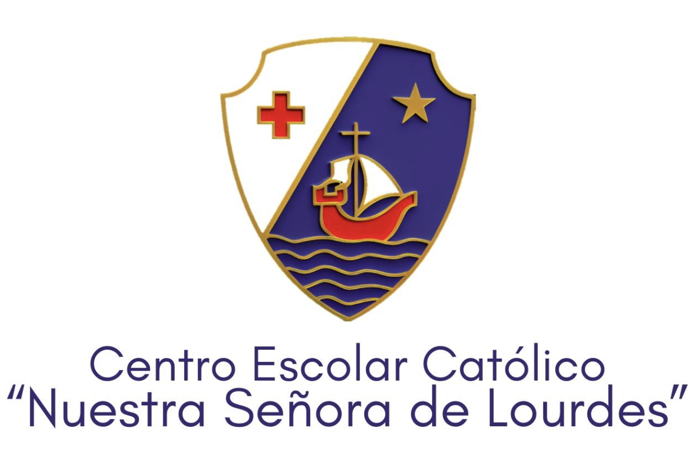
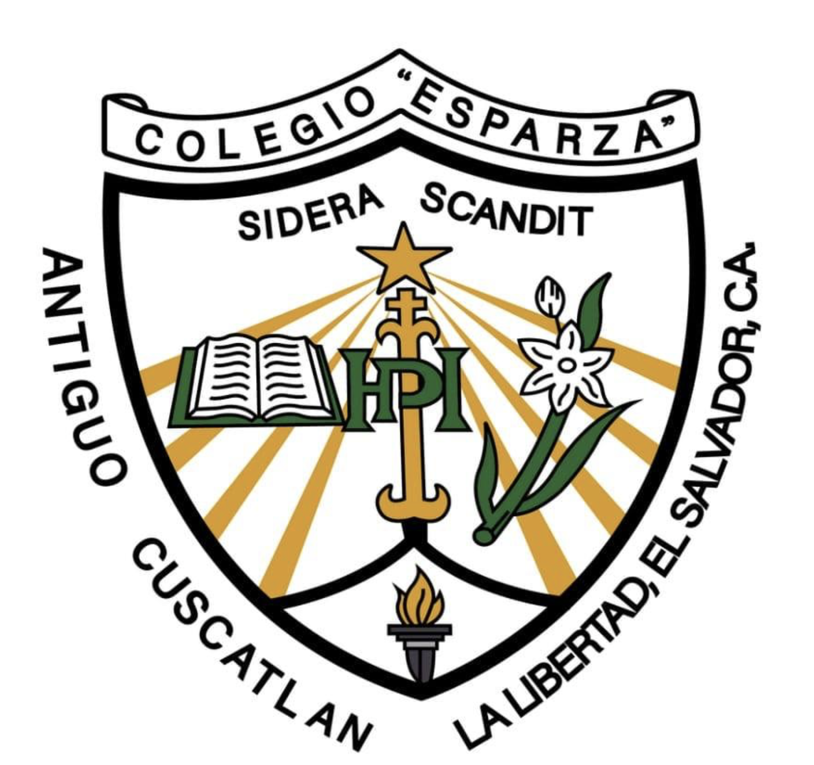

Introducción

Soy Tiffany (Tiff), una estudiante de Ingeniería de Software y Negocios Digitales en la Escuela Superior de
Economía y Negocios (ESEN). Aunque el camino a veces es retador, me apasiona la tecnología y su impacto
real en la vida de las personas. Me mueven el aprendizaje constante, los proyectos con propósito y la idea de
construir soluciones que mezclen lo técnico con lo humano.
Sobre mí
¡Hola! Soy Tiffany Lisbeth Meléndez Ramos, aunque la mayoría me conoce como Tiff. Nací en San Salvador,
en el Hospital Primero de Mayo, un lluvioso 1 de julio de 2006. Desde pequeña he sido curiosa y creativa,
siempre con ganas de aprender y descubrir cosas nuevas. También me ha encantado crear y diseñar, y hoy he
transformado esa pasión en el mundo de la programación, una carrera que jamás hubiera imaginado estudiar
de niña.

Mi educación
Mis primeros pasos en la educación los di en el Centro Escolar Católico Nuestra Señora de Lourdes, donde
crecí entre juegos, amigos y aprendizajes que marcaron mi niñez hasta sexto grado. Después viví nuevas
experiencias y desafíos desde séptimo hasta segundo año de bachillerato, etapa en la que cerré un capítulo
importante de mi vida escolar. Hoy, ese camino me ha llevado a estudiar Ingeniería de Software y Negocios
Digitales en la Escuela Superior de Economía y Negocios (ESEN), donde curso mi segundo año. Aunque a veces
la carrera puede ser un verdadero reto, mi pasión por la tecnología y el desarrollo sigue creciendo día a día.

Centro Escolar Católico Nuestra Señora de Lourdes

Colegio Esparza

Escuela Superior de Economía y Negocios (ESEN)
Hobbies y pasiones
Entre mis hobbies y pasiones se encuentran:
- Me encanta salir a caminar con mis perros y disfrutar de la tranquilidad que me da
- Soy fan de ver series y películas
- En ocasiones especiales me gusta pintar, dejando que mi creatividad fluya